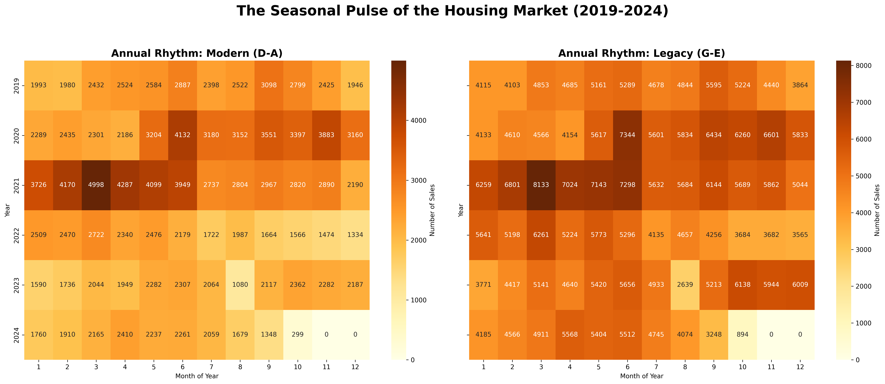

The Market Decoupling
How the Energy Crisis shattered the Danish housing mono-culture.
For thirty years, Danish house prices moved in a synchronized dance. Location mattered, of course, but the building itself was often a secondary variable. That changed in the winter of 2022. When energy prices spiked, the "Energimærke" stopped being a technical formality and became a financial weapon.
Our analysis of 1.5 million sales reveals a structural shift: a "Market Decoupling" where the building's technical performance dictates its equity growth as much as its zip code.
1. The Shift in Sentiment (The "Gold Standard")


Figure 1: Ridgeline distributions of price per sqm by building era. This shows the authentic market decoupling: legacy housing distributions (bottom) flattened and shifted left in 2022-23.
Top-Tier Candidate Lab
Below are 4 visualization candidates for slots 2 and 3. I have selected the most advanced patterns from the course for your review.
Candidate A: The Temporal Movie (Current Figure 2)
Inspiration: Week 5 (Heatmap Movies)
Strong for showing "Where" the stress happened over time. Fixed overlap and text issues.
Candidate B: The Anxiety Heatmap (Current Figure 3)
Inspiration: Week 2 (Temporal Rhythms)

Strong for showing the "Hidden Friction" (Haggling) that doesn't show up in final prices.
Candidate C: The Polar Price Compass (NEW)
Inspiration: Week 3 (Exercise 2.2 - Polar Charts)
Visualizes the "Seasonal Squeeze". Notice how Legacy homes (red) face extreme haggling specifically in the winter months of the crisis.
Candidate D: The Parallel Resilience Flow (NEW)
Inspiration: Week 6 (Parallel Coordinates/Categories)
The ultimate "Flare" plot. Allows the reader to trace the flow from building age to geographic area to the final market outcome.
Conclusion
The energy crisis re-indexed the Danish home. Resilience is now a technical asset defined by your walls.